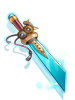
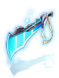

Tartaros' Storeroom Lower Level
Jump to navigation
Jump to search
Overview
Tartaros' Storeroom Lower Level is a place free to be accessed as soon as you gain access to it after doing a quest in Tartaros' Warehouse.
Access to the dungeon is made through a NPC at inside Tartaros.
Monsters
| Image | Name | Level | HP | Size / Race / Element |
|---|---|---|---|---|
| Broken Warehouse Manager | 185 | 1,900,983 | Medium / Demi-Human / Neutral 2 | |
| Broken Security Beta | 186 | 1,909,523 | Medium / Formless / Wind 2 | |
| Broken Cleaning Robot | 175 | 1,200,685 | Small / Formless / Neutral 2 |
Equipment
| Image | Name | Slot | Description |
|---|---|---|---|
|  | Hypocrisy Machine [3] | Weapon |
|

|
Ira Fist [2] | Weapon |
|
|  | Hypocrisy Edge [2] | Weapon |
|


Cards
| Card | Type | Effects |
|---|---|---|
| Accessory Card |
| |
| Accessory Card |
|